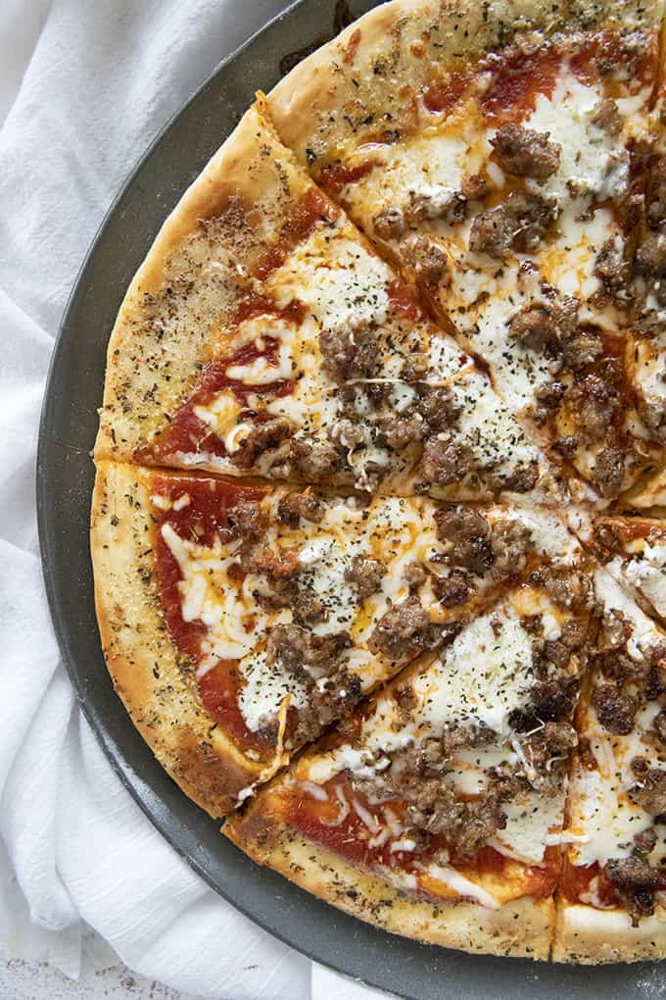

I used ground Italian Sausage, and it's probably the best if you have any on hand. Otherwise, you can use ground beef or even ground pork sausage. Sweet, mild, or hot sausage is fine.
For the cheeses, I used shredded mozzarella, shredded parmesan, and dollops of mascarpone because that's what I had on hand. I know not everyone keeps mascarpone around so feel free to sub it out with dollops of cream cheese, ricotta, or even cottage cheese!
I do have a recipe for homemade Pizza Sauce that's great, it makes a decent sized batch and you can freeze if you want to make extra. Otherwise, just use your fave marinara or pizza sauce from the store.
I did use all dried herbs because that's what I always have in my pantry. Dried oregano and basil sprinkled over the garlic butter crust and the entire pizza really make this heavenly. You can always use fresh herbs if you have some!
Ingredients
- Pizza Dough
- 1 Pound Ground Italian Sausage
- 3 Cloves Garlic, Minced
- 1 teaspoon Dried Oregano
- 1 teaspoon Dried Basil
- 1-2 Cups Pizza Sauce
- ½ Cup Mascarpone, Ricotta, Cottage, or Cream Cheese
- 1 Cup Shredded Mozzarella Cheese
- ⅓ Cup Shredded Parmesan Cheese
Instructions
- Preheat the oven to 450 degrees. Click the link above to prepare the pizza dough as directed.
- If using store bought dough, simply roll out as directed onto your pizza pan.
- Cook the sausage, crumbling as you go along with the garlic, oregano, and basil until no longer pink. Drain any grease and set aside.
- Top the pizza evenly with the sauce, then dollop on the mascarpone, ricotta, cottage, or cream cheese depending on preference. Top evenly with shredded mozzarella, parmesan, and cooked sausage.
- Bake in preheated oven for 10 minutes until cheese is melted.
- Serve immediately.